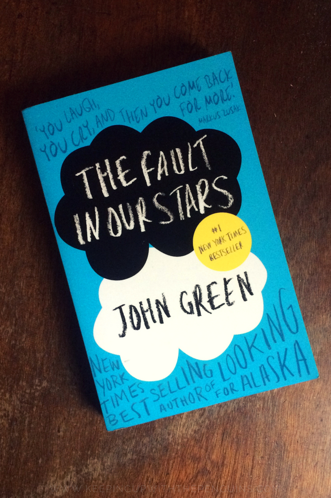
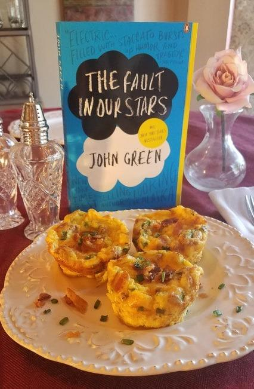

$7.83 USD
The fault in our stars
John Green
I’m embarrassed, still, by how long it took me to notice. Everything was right there in the open, right there in front of me, but it still took me so long to see the person I had married.
It took me so long to hate him.
Martine is a genetically cloned replica made from Evelyn Caldwell’s award-winning research. She’s patient and gentle and obedient. She’s everything Evelyn swore she’d never be.
And she’s having an affair with Evelyn’s husband.
Now, the cheating bastard is dead, and both Caldwell wives have a mess to clean up.
Good thing Evelyn Caldwell is used to getting her hands dirty.